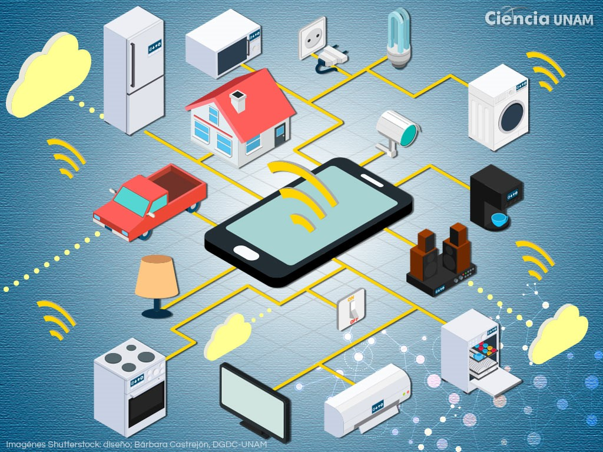
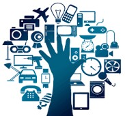
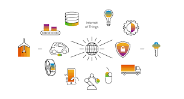

| Colegio de Bachilleres del Estado de Mexico Plantel 17 Huixquilucan II |
Violencia familiar
La contaminacion
El internet de las cosas
|---|
| ¿Qué es es el internet? Internet es una red de computadoras interconectadas a nivel mundial en forma de tela de araña que consiste de servidores que proveen información a aproximadamente 100 millones de personas que están conectadas entre ellas a través de las redes de telefonía y cable. | ¿Por qué es tan importante el Internet de las Cosas? El internet de las cosas es un gran avance en la calidad de vida para las personas ya que posibilita servicios específicos en la educación, seguridad de manera personalizada y inmediata. | ¿Cómo funciona el Internet de las cosas? Es un término amplio que se utiliza para la interconexión de objetos cotidianos con Internet, teniendo en cuenta los estudios en informática, estos dispositivos incluyen teléfonos inteligentes, automóviles, televisores, relojes, electrodomésticos, etc. |  | |
| ¿Cuáles son las ventajas del internet de las Cosas? Todo podrá ser medido. Desde electrodomésticos, equipos de construcción, edificios o vehículos transmitirán datos y se podrán comunicar con otros objetos o personas Las métricas se utilizarán en tiempo real Los datos procesables serán compartidos Las industrias se interconectarán | ¿Qué desventajas hay con el Internet de las Cosas?
La información no se encuentra cifrada, por lo que no se nos ofrece una total seguridad.
Puede llegar a haber falta de compatibilidad ya que IoT no está estandarizado, debido a que no se está llegando a trabajar del todo con el IEEE.  |
Internet de las cosas El Internet de las cosas describe objetos físicos o grupos de estos con sensores, capacidad de procesamiento, software y otras tecnologías que se conectan e intercambian datos con otros dispositivos y sistemas a través de internet u otras redes de comunicación |
|  | Conclusión Su uso ofrece un gran valor, en especial en relación con los costes o el aumento de la productividad |